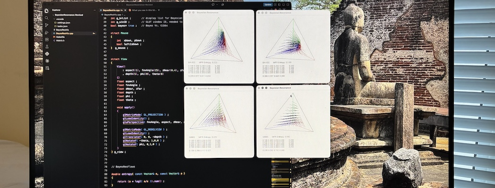

The Natural Kinematics of Belief

Among my serious research papers, I am especially fond of this one. It was stimulated by a survey of belief update algorithms by Wright State University PhD student Brian Clausing for his dissertation. I took one of those algorithms and reframed it as a dynamical system implemented on a neural net, and did a lot of experiments. It started to look very elegant. I wrote it up in a memo in 1993 and a draft paper in 1995, under the name "Bayesian Resonance". Then set it aside.
In 2005 I returned to it. Playing around with a basic idea from information geometry, I found that it was in fact doing something even more elegant: so-called "natural gradient" descent. I did a bit of math and more code in C++ and Mathematica-- colorful interactive simulations of trajectories swerving along probability simplices, beliefs driven by evidence through a dynamics defined by a probabilistic knowledge base. It came together nicely.
I submitted it to Neural Computation in June 2005. I got a "revise and resubmit" response with mostly thoughtful and supportive comments. Based on feedback, I changed the ways I referred to graphical models (in retrospect it would have been clearer to not distract the reader by references to them). I resubmitted it in March 2007. There was one negative review (alongside positive reviews), which I thought (as authors occcasionally do) was misguided, and, alas, the paper was not accepted.
As was usual then, I got quickly pulled into other work-- I was part of a team building a new "College of Informatics" at the time. But years later, rereading it, I think it is still quite interesting. So I am adding it to the resting place that is this website:
-
"Jeffrey-Bayes Dynamics as Natural Gradient Descent by a Recurrent Network".
Resubmitted to Neural Computation (2007).
It shares features with two other architectures I have written about: Helmholtz Machines (back and forth iterations in a neural net) and Reservoir Computing / Context Reverberation (dynamical systems with fixed parameters forced by inputs). When I presented it at a Physics Colloquium at NKU, for fun I emphasized the Riemannian geometry / general relativity angle ("Changing your beliefs is like falling into the sun...").
Photo (K. Kirby): Bayesian Resonance C++/OpenGL code from 2004 reborn 22 years later.